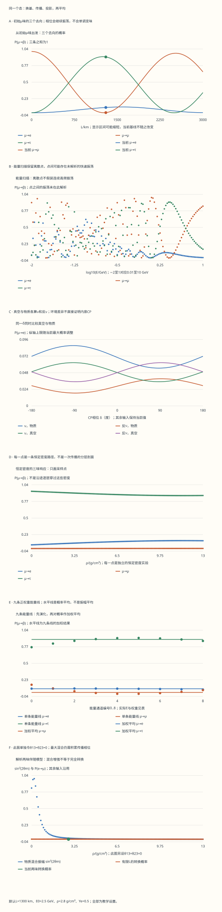

本页目录
- 先抓住一件事：传播本征态与探测标签没有对齐
- 1. 味标签从哪里来：先分清CKM与PMNS
- 2. 味态、质量态和那个不能漏掉的复共轭
- 3. 两味推导：混合角管振幅，相对相位管峰谷
- 4. 三味PMNS：把三个旋转真正乘出来
- 5. 恒定物质：改变Hamiltonian，而不是额外“随机变味”
- 6. 两味MSW：最大混合不保证当前基线完全转换
- 7. CP比较：先问环境是否也被共轭
- 8. 绝对质量与Majorana相位：两个“不敏感”要算清
- 9. 能谱平均：每条通道保持相干，合起来仍可成为混合
- 10. 六张图怎样读：防止采样制造假物理
- 11. 从概率到事件：实验真正计数的是什么
- 12. 向前沿延伸：每一个问题需要什么新增证据
粒子 IV · 味、混合与中微子振荡
前置：量子态与测量、电弱质量与中性流、QCD与强子。本页把线性代数中的换基、量子相位和实际事件率接在一起：能算出概率，也要知道概率究竟对应什么测量。
完成后你应能：从两个基底推导振荡；用完整三味矩阵计算真空和恒定物质传播；区分内禀CP效应、环境差异与能谱平均；说明为什么振荡不足以单独确定绝对质量或Majorana性质。
先抓住一件事：传播本征态与探测标签没有对齐
想象一个量子态在能量本征基里有几个分量。传播时每个分量只转动自己的复相位；探测器却用另一套基底提问。不同分量重新相加时，增强或抵消的位置随距离变化。中微子的“变味”就是这种干涉，不是沿途把某个内部小球依次换成另一种小球。
先读第1至4节并手算两味例子，再用第5至8节看三味与物质。第9至12节把能谱、数值读图和实际推断分开。实验中的所有数值均为明确设置的教学参数，不是某次全球拟合的最佳值。
1. 味标签从哪里来：先分清CKM与PMNS
带电流弱作用把带电轻子与中微子联系起来。若产生或探测顶点伴随电子、缪子或陶轻子，我们分别称为电子味、缪子味或陶味，记作 \(\nu_e,\nu_\mu,\nu_\tau\)。味是这个相互作用的标签；自由传播按质量本征态 \(\nu_1,\nu_2,\nu_3\) 展开。两套标签都在描述同一量子态。
为什么会有两套不一致的基底？Dirac质量矩阵通过左右幺正变换被对角化，而同一个弱双重态的两个成员一般需要不同的左手变换。这里约定弱基场 \(f_L^{\rm weak}=V_{fL}f_L^{\rm mass}\)；Majorana质量用相应的幺正合同变换对角化，左手场的基底关系仍可如此定义。两次变换的相对矩阵留在带电流顶点中。夸克部分为 \(V_{\rm CKM}=V_{uL}^\dagger V_{dL}\)；轻子部分为 \(U_{\rm PMNS}=V_{\ell L}^\dagger V_{\nu L}\)。例如夸克的带电流含 \(\bar u_L\gamma^\mu V_{\rm CKM}d_L W_\mu^+\)，轻子部分含 \(\bar\ell_L\gamma^\mu U_{\rm PMNS}\nu_L W_\mu^-\)，整体常数和厄米共轭在此略去。若文献把场变换定义成反方向，\(V_{fL}\)的共轭位置也会改变，实际顶点的内容相同。
这并不意味着可以照搬本页公式，画出“自由下夸克飞行数百公里后变成奇夸克”的实验。夸克被禁闭在强子中；夸克味物理通过衰变、散射和中性介子混合等过程检验，还依赖强子矩阵元。中性介子的粒子／反粒子混合涉及衰变宽度和有效非厄米演化，也不等于本页的封闭三活性中微子模型。CKM的定义与相位计数可对照 PDG CKM综述第12.1节。
自己检查：若两套左手变换完全相同，相对矩阵是什么？若中性流在该味空间正比单位阵，换基会不会凭空产生树级非对角项？
详解1：相对变换与中性流的消去
若 \(V_{uL}=V_{dL}=V_L\)，则 \(V_{\rm CKM}=V_L^\dagger V_L=I\)。这里要求两套变换彼此对齐，而不是要求每一个都等于单位阵。
若原中性流矩阵为 \(gI\)，换到质量基后仍是 \(V_L^\dagger(gI)V_L=gI\)。这个消去需要耦合在该空间中普适且变换幺正。它不宣称所有圈图味改变过程都为零，也不排除扩展模型中的新结构。学会指出恒等式用到的前提，比背一句“中性流不变味”更可靠。
2. 味态、质量态和那个不能漏掉的复共轭
本页用 \(U_{\alpha i}\) 表示PMNS矩阵，行标 \(\alpha=e,\mu,\tau\)，列标 \(i=1,2,3\)。味态的ket定义为
复共轭来自态与带电流系数的约定；若只练实两味旋转，它会被“实数的共轭还是自己”掩盖。到了CP相位问题就必须写清。传播振幅是先展开初态、给质量分量加相位、再投影到末态：
此式先用自然单位 \(\hbar=c=1\)。实验的振幅矩阵 \(S\) 按“行末味、列初味”保存；概率表为了方便按初味读取，采用“行初味、列末味”。两者的索引方向不同，不要直接把同一位置的数当成对应元素。公式约定可与 PDG中微子综述式14.35至14.40 核对。
自己检查：为什么 \(L=0\) 时不能还剩一个任意的异味概率？
详解2：产生即探测时的概率
在 \(L=0\) 时每个传播相位为1，于是 \(S(0)=UU^\dagger=I\)。因此 \(P_{\alpha\beta}(0)=\delta_{\alpha\beta}\)，而不是 \(|U_{\alpha\beta}|^2\)。混合矩阵只负责两次换基，中间没有相对相位积累时，两次换基正好抵消。
对任意基线，若演化封闭且厄米，\(S^\dagger S=I\)，故对固定初味有 \(\sum_\beta P_{\alpha\beta}=1\)。三维幺正矩阵同时满足 \(SS^\dagger=I\)，因此概率表的列和也为1。这是本模型的双随机结构，不应强行套到有吸收或未观测额外态的截取概率表。
3. 两味推导：混合角管振幅，相对相位管峰谷
先取实旋转 \(U=\begin{pmatrix}c&s\\-s&c\end{pmatrix}\)，其中 \(c=\cos\theta\)、\(s=\sin\theta\)。初味 \(\alpha\) 到末味 \(\beta\) 的振幅为 \(cs(e^{-i\phi_2}-e^{-i\phi_1})\)，\(\phi_i=m_i^2L/(2E)\)。提出共同相位后，剩下两个单位圆上的点之差：
取模平方就得到
所以两个条件缺一不可：有相位差，也要让初态包含不止一个不同相位的传播分量。\(\theta=0\) 时振幅为零；\(\Delta m^2=0\) 时相对相位为零。对两味模型，\(\theta=90^\circ\) 同样没有混合转换，只是交换了标签。
在本页单位中，\(L\) 用km，\(E\) 用GeV，\(\Delta m^2\) 用eV²。由 \(\hbar c=0.1973269804\ {\rm GeV\,fm}\) 及 \(1\ {\rm km}=10^{18}\ {\rm fm}\)、\(1\ {\rm eV^2}=10^{-18}\ {\rm GeV^2}\)，振幅相位的系数为 \(\kappa=1/(2\times0.1973269804)\simeq2.53386536\)；概率正弦中的系数是 \(\kappa/2\simeq1.26693268\)。不要把振幅的相对相位和概率中的半相位混用。
例如 \(\theta=33^\circ\)、\(\Delta m^2=2.5\times10^{-3}\ {\rm eV^2}\)、\(E=1\ {\rm GeV}\)，首次转换极大满足 \((\kappa/2)\Delta m^2L/E=\pi/2\)，即 \(L\simeq495.94\ {\rm km}\)，峰值约为 \(\sin^266^\circ\simeq0.8346\)。若把系数提前舍入成1.27会得到略有差别的基线；本页计算保留上述统一常数。
4. 三味PMNS：把三个旋转真正乘出来
记 \(c_{ij}=\cos\theta_{ij}\)、\(s_{ij}=\sin\theta_{ij}\)。本页取 \(U=R_{23}U_{13}(\delta)R_{12}\)，其中13平面的非对角元为 \(s_{13}e^{-i\delta}\) 和 \(-s_{13}e^{i\delta}\)。乘积为
三个角不是分别独立决定三个转换概率的旋钮。每个概率都来自同一矩阵多项相加，会同时依赖多个角、质量平方差和相位。实验保存三个旋转、完整 \(U\)、\(U^\dagger U\) 和全部九个概率，可检查任意行列，而不仅是屏幕上的三条曲线。
默认设置为 \((\theta_{12},\theta_{13},\theta_{23},\delta)=(33^\circ,9^\circ,45^\circ,-90^\circ)\)，相对质量平方为 \((0,7.5\times10^{-5},2.5\times10^{-3})\ {\rm eV^2}\)。这些是便于比较的示例。改变大质量平方差符号的预设用于研究模型响应，不是对当前实测排序作结论。
自己检查：矩阵中有复数是否就证明存在物理CP破坏？怎样构造不依赖行列重定相位的检查量？
详解3：复数外观与可观测不变量
对 \(U_{\alpha i}\to e^{ia_\alpha}U_{\alpha i}e^{ib_i}\)，单个元素的相位会改变，但四元积 \(U_{e1}U_{\mu2}U_{e2}^*U_{\mu1}^*\) 中的行、列相位都抵消。其虚部为
默认 \(J\simeq-0.0348532\)。若 \(\theta_{13}=0\)，即使写着 \(\delta=-90^\circ\)，\(J\) 也为零，13旋转中的相位已没有作用。三味真空振荡中的CP差异还需要不同质量相位实际积累：\(J\) 非零并不保证每一个选定的 \(L/E\) 上差异都非零，某些相位节点处仍可抵消。
5. 恒定物质：改变Hamiltonian，而不是额外“随机变味”
普通、无极化物质中的电子给电子中微子一个相干前向散射势 \(V_e=\sqrt2G_Fn_e\)。对三个活性味都相同的中性流项只贡献共同相位，在本模型中去掉。令 \(A=2EV_e\)，则味基中的有效质量平方矩阵为
这里 \(K\) 以eV²计，\(\kappa\) 使用上一节说明的单位约定。电子数密度取 \(n_e=Y_e\rho/m_u\)，\(m_u\) 是原子质量单位；实验固定电子比例 \(Y_e=0.5\)，用舍入后的教学系数 \(A/{\rm eV^2}=7.632\times10^{-5}[\rho/({\rm g\,cm^{-3}})][E/{\rm GeV}]\)。物质中改变 \(E\) 会同时改变真空相位尺度和相对物质效应，不能只沿用真空的 \(L/E\) 比例。
反中微子需要同时做两件事：\(U\to U^*\)，\(A\to-A\)。只把 \(\delta\) 反号却保留同号物质势，会算出错误的反粒子传播。实验因此同时给出当前、真空、\(\nu\)物质、反\(\nu\)物质、\(\nu\)真空、反\(\nu\)真空六套矩阵和概率。
自己检查：若两项质量平方差都为零，但 \(\rho>0\)，电子味是否仍会转换成缪子味？
详解4：物质相位本身不是异味振幅
此时 \(K={\rm diag}(A,0,0)\)，故 \(S={\rm diag}(e^{-i\kappa AL/E},1,1)\)。电子分量确实积累了不同相位，但每一个初始味都仍是 \(K\) 的本征态，所以概率表为单位阵。物质势不是独立于混合结构的随机转味率。
若三混合角都为零，质量项也已在味基中对角，即使两个质量平方差非零，结论仍一样。这两个预设从不同方向检查同一个机制：对角相位不把单一基矢变成另一个基矢。
6. 两味MSW：最大混合不保证当前基线完全转换
为了手算，单独令 \(\theta_{13}=\theta_{23}=0\)，只保留 \(e,\mu\) 两味块，\(\theta=\theta_{12}\)、\(\Delta=\Delta m_{21}^2\)。从该块减掉迹的一半后得到
令 \(d=\Delta\cos2\theta-A\)、\(b=\Delta\sin2\theta\)，有效本征值差为 \(\Delta_m=\sqrt{d^2+b^2}\)。当 \(\Delta_m>0\)，
非平凡共振要求 \(d=0\) 且 \(b\ne0\)；此时混合振幅为1，但第二个正弦仍取决于传播长度。在共振密度里走了零距离，转换概率仍为零。若 \(b=0\) 且 \(d=0\)，矩阵完全简并，角度公式成为 \(0/0\)，实验返回null而不是武断填1；传播只有共同相位，转换为0。
实验第六图是上述两味伴随模型：它另外把两个角置零，不会悄悄改变其余三味图的控件。密度每个采样点都表示一条恒定密度路径；不能把它理解成一次中微子依次经过全部密度。太阳的变化密度、绝热跟随与非绝热跃迁，需要沿路径求解，不能由这张恒定密度图独自推出。
7. CP比较：先问环境是否也被共轭
真空中，反中微子的混合矩阵取共轭；在本页封闭模型里可推得 \(\bar S=S^{\mathsf T}\)，从而 \(\bar P_{\alpha\beta}=P_{\beta\alpha}\)。三味CP相位可以让相反方向的概率不同。实验第三图固定其余输入，只扫描 \(\delta\)，同时呈现真空和物质的 \(\mu\to e\) 概率。
在普通物质中，\(\nu\)与反\(\nu\)受到相反的电子势，环境本身没有随比较一起变成反物质。于是即使 \(\delta=0\)，两者也可能不同。这里的“物质诱导差异”是模型中的真实传播效应；它会影响CP推断，需要建模分离，不能简单删除。为看清较小的概率差，CP图的纵轴从0开始、上限随当前四组数据最大值调整；跨预设比较时应读坐标数值，不能只比较曲线在屏幕上的高度。
自己检查：怎样用预设做一个可复核的对照，而不是看到两条线分开就宣布发现CP破坏？
详解5：四组比较及其不能证明的事
先选 \(\delta=0\) 并取 \(\rho=0\)：矩阵可取实，\(\nu\)和反\(\nu\)真空概率相同。保持 \(\delta=0\) 但恢复密度，若曲线分开，差异由环境项造成。再保持真空并改变 \(\delta\)，寻找内禀相位造成的响应。最后在物质中同时保留两者，观察组合结果。
这种受控计算验证的是所写Hamiltonian的逻辑。真实实验不能直接按按钮关闭沿途地球密度，也不能任意设定自然界的 \(\delta\)；它要联合不同能区、粒子模式和系统误差来反演参数。某个模拟点的概率差不是实验显著性，更不是某个参数已被测定的证据。
8. 绝对质量与Majorana相位：两个“不敏感”要算清
振荡只依赖质量平方差。所有 \(m_i^2\) 同时加 \(c\)，\(K\) 就变为 \(K+cI\)，演化多出 \(e^{-i\kappa cL/E}\)，概率不变。因此把相对对角线写成 \((0,\Delta m_{21}^2,\Delta m_{31}^2)\) 只是减去共同零点；负的 \(\Delta m_{31}^2\) 不意味着有负的物理质量平方。只需加上足够大的共同正常数，便能让三个绝对平方均非负。
若 \(U\) 右乘列相位矩阵 \(D={\rm diag}(e^{i\eta_1},e^{i\eta_2},e^{i\eta_3})\)，则 \(UD\,{\rm diag}(m_i^2)D^\dagger U^\dagger=U\,{\rm diag}(m_i^2)U^\dagger\)。因而普通振荡不敏感于这些Majorana列相位。实验实际加上 \((0,0.37,0.83)\) 弧度的列相位，并把 \(K\) 共同平移 \(0.007\ {\rm eV^2}\)，分别重算概率作为两个独立对照。
自己检查：既然列相位在振荡中抵消，是否意味着任何中微子观测都不可能依赖它们？
详解6：相消取决于振幅的具体结构
普通振荡中同一个质量指标的系数配对为 \(U_{\beta i}U_{\alpha i}^*\)，所以列相位抵消。轻Majorana中微子交换机制的无中微子双β衰变则涉及 \(m_{\beta\beta}=|\sum_i U_{ei}^2m_i|\)；这里没有那个共轭，列相位可以进入相消。该表达式依赖所假设的衰变机制，事件率还需要核矩阵元等信息。
反过来，直接质量测量、宇宙学和振荡也不是同一观测。它们对质量组合、背景模型和误差来源的依赖不同。振荡拟合给出的质量平方差不能单独替代这些观测，更不能仅凭本页的概率曲线断言Dirac或Majorana性质。质量模型与双β过程的入门讨论见 Tong《标准模型》第7.1节。
9. 能谱平均：每条通道保持相干，合起来仍可成为混合
对已知能量 \(E\)、固定初味 \(\alpha\)，传播后的密度矩阵为 \(\rho_\alpha(E)=S(E)|\alpha\rangle\langle\alpha|S(E)^\dagger\)。如果只知道能量属于若干通道，概率为 \(w_j\ge0\)、\(\sum_jw_j=1\)，忽略该能量标签后的味态是
实验精确定义九条离散能量线：\(z_j=(j-4)/2\)，\(j=0,\ldots,8\)；\(w_j\) 与 \(e^{-z_j^2/2}\) 成正比并归一化；\(E_j=E_0e^{\sigma z_j}\)。滑块的整数读数为 \(100\sigma\)，不是能量标准差的百分数。\(E_0\) 是对数中心，算术平均能量 \(\sum_jw_jE_j\) 另列；默认 \(E_0=2.5\ {\rm GeV}\)、\(\sigma=0.1\) 时平均约为 \(2.51073\ {\rm GeV}\)。
这九条线本身就是有限教学模型，不声称它们是高精度高斯积分，也不把权重当作某台探测器的真实响应。每条线的 \(S\)、九个概率和三份初态密度矩阵都保存；再逐项加权，能检查纯度为什么改变。
自己检查：为什么应该平均概率或密度矩阵，而不是先平均各能量的振幅再取模平方？
详解7：是否保留能量通道间的相干关系
这里的输入是经典随机通道，不提供不同能量之间确定的相对相位。因此 \(\left|\sum_j w_jS_j\right|^2\) 会无依据地加入通道间交叉项，且权重与振幅系数的意义也混淆。正确对象是 \(\sum_jw_j\rho_j\)。
对任意向量 \(v\)，\(v^\dagger\bar\rho v=\sum_jw_j|\langle v|\psi_j\rangle|^2\ge0\)，故平均态半正定；迹仍为1。它的纯度满足 \(1/3\le{\rm tr}\bar\rho^2\le1\)。宽度为0时所有能量相同，恢复纯态；宽度非零时若各通道恰好得到相同味态，纯度也可以仍为1，不能把“有宽度”与“必然降纯度”画等号。
波包分离则涉及不同质量分量的群速度差、产生和探测的局域性。它可能压低干涉项，但不是这个有限统计混合模型证明的微观机制。两味理想快速相位平均得到 \(\tfrac12\sin^22\theta\)；九条固定能量线不保证总能精确达到这个连续平均极限。
10. 六张图怎样读：防止采样制造假物理
先为实验四题各选一个预测，再显示结果。每次改变参数会重新收起结果，避免把旧图误认作新输入。第一个概率图统一从初始 \(\mu\) 味出发；完整表和JSON仍保存全部初味。所有矩阵的复元素写成 \([\operatorname{Re},\operatorname{Im}]\)，手机上可横向滚动。
最容易出错的是低能长基线：振荡可能比画图点间距快得多，稀疏连线会制造不存在的慢包络。基线图用 \(H=K-\operatorname{tr}(K)I/3\)，取谱跨度上界 \(B=2\|H\|_1\)。因为 \(H\) 厄米且 \(\|H\|_2\le\|H\|_1\)，任意本征值差不超过 \(B\)，最短振荡周期不短于 \(2\pi E/(\kappa B)\)。实验把图域限制在这个周期下界的8倍以内，用201点，使点间距不超过该下界的 \(1/25\)。这是采样尺度控制，不是零误差插值定理。
当前输入的 \(L\) 始终用于实际矩阵和概率。若它超过缩短后的图域，界面会说明“当前基线超出图范围”，而不是移动红点或改掉输入。能量、密度和两味密度扫描只画离散点，明确不连接未知的快速峰谷。CP相位图扫描的是矩阵参数；它与沿距离的高频扫描不是同一回事。
演化矩阵用去迹后的缩放平方法计算：把指数矩阵缩小到1范数不超过0.5，用24阶Taylor多项式，再反复平方并恢复共同相位。记录中的单步尾界是 \(e^x x^{25}/25!\)；它只约束该小矩阵Taylor截断，不包含浮点舍入或后续平方的误差。另给原始幺正性残差，不把概率裁到 \([0,1]\) 或重新归一化来掩盖数值问题。
无脚本对照：六份固定记录保留完整PMNS、六套传播矩阵、九个能量通道及其密度矩阵、201个基线点、121个能量点、181个CP相位的四组对照和131个密度点。下表的概率统一指初始μ味到电子味；平均态纯度也对应初始μ味。

| 预设 | L/km | E0/GeV | 单能Pμe | 平均Pμe | 平均纯度 | 幺正残差 | 当前L在基线图内 |
|---|---|---|---|---|---|---|---|
| default | 1300 | 2.5 | 0.086845549 | 0.085395424 | 0.95679578 | 1.7763568e-15 | 是 |
| cp-zero | 1300 | 2.5 | 0.06985653 | 0.068305396 | 0.95645362 | 1.7763568e-15 | 是 |
| degenerate | 1300 | 2.5 | 0 | 0 | 1 | 2.220446e-16 | 是 |
| two-flavor | 800 | 0.1 | 0.40870438 | 0.41206737 | 0.9912166 | 1.1213253e-14 | 否 |
| monochromatic | 1300 | 2.5 | 0.086845549 | 0.086845549 | 1 | 1.7763568e-15 | 是 |
| fast | 13000 | 0.01 | 0.0066425119 | 0.10981328 | 0.45764293 | 1.4390711e-12 | 否 |
下载六份完整记录。负质量平方差是相对零点；简并两味角保存为null。快速振荡预设的当前基线仍为13000 km，只有基线图的显示范围缩短。九条能量线的中心是对数中心，平均能量另列。
11. 从概率到事件：实验真正计数的是什么
一张 \(P(L,E)\) 曲线还不是探测器的能谱。对重建能量区间 \(b\)，一个简化的预测式是
这里 \(\Phi_\alpha\) 是入射通量，\(\sigma_\beta\) 是相互作用截面，\(\epsilon_\beta\) 是效率，\(R_b\) 表示真实能量落入重建区间的响应概率，\(T\) 汇总曝光与靶数约定，\(B_b\) 是背景。若能量和识别效率相关，应使用相应的联合响应而不是机械相乘。实际还可能对源位置和路径密度平均。
只看到总计数下降，既可能来自转换，也可能来自通量、截面、效率或背景估计偏差。多个基线、能区与通道的联合信息提供不同约束；近端与远端探测器有助于约束共同因素，但不保证所有系统误差完全相消。本页九能量线只示范概率平均，不包含这些真实探测环节。
自己检查：真空中同时把 \(L\) 和 \(E\) 乘10，单能振荡概率不变。是否可以据此断言两次真实实验的计数相同？
详解8：相同L/E并不等于相同实验
在质量差和混合矩阵固定的真空模型中，相位仅依赖 \(L/E\)，故概率相同。但通量的几何稀释、截面、探测效率、源能谱和曝光都可能改变；计数式中的其他因子没有随这个比例自动保持不变。
即使只比较传播，物质中的 \(A\propto E\) 也改变有效混合与真空项的相对强度，不能仅凭相同 \(L/E\) 保证相同概率。若还比较波包分离，相干长度常有与 \(E^2/|\Delta m^2|\) 有关的标度，仍不是简单的 \(L/E\) 不变量。必须逐一检查模型中的量，而不是把一个真空公式扩成普遍相似律。
12. 向前沿延伸：每一个问题需要什么新增证据
完成本页后，可以沿三条路线继续。第一条是传播模型：把恒定密度变为分层或连续剖面，以路径有序演化检查绝热条件、共振通过与参数简并。第二条是统计推断：用事件生成、能量响应和联合似然，研究多个参数及系统误差如何相关；不能把一条漂亮的拟合曲线当成唯一解释。第三条是质量与新相互作用：比较Dirac质量、Majorana质量、有效算符、额外态或非标准物质相互作用分别改变哪一步。
这些延伸的证据需求不同。排序和CP信息需要能量与通道依赖；绝对质量需要振荡之外的观测；轻子数破坏的过程需要相应反应的信号和背景分析。本文没有据教学默认参数发布当前显著性、质量上限或实验排名，阅读新结果时应查看原始分析采用的数据集、假设和不确定度。
一个适合提交的小项目是：固定一套示例参数，先证明零基线、零混合、质量简并三条边界；再做真空／物质及 \(\nu\)／反\(\nu\)四组对照；最后构造一个简单响应矩阵，把概率变成预测计数，并说明哪组观测能区分两套候选参数。提交推导、参数表、完整矩阵和误差说明，而不只交截图。
下一页进入 对撞机与探测器：继续练习如何把理论振幅、真实事例、重建量和统计证据区分清楚。